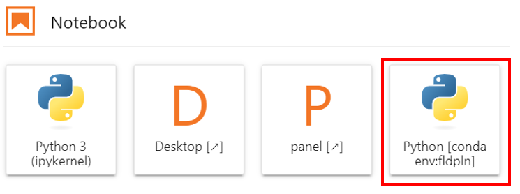
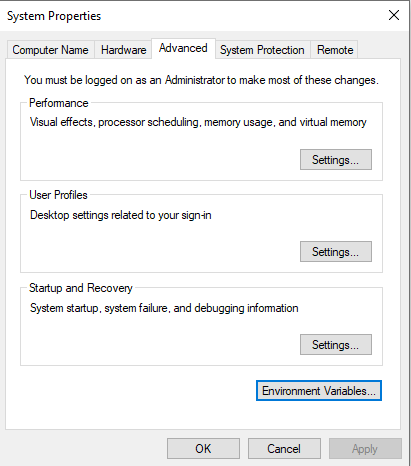

Build a Python Environment for Using the FLDPLN Model#
Basics of Python environments#
Brief introduction on Python virtual environment and options to manage the environment. The last 3 options don’t come with standard Python installation and have to be installed separately.
Python venv module, preinstalled with Python starting from version 3.3
Virtualenv, a superset of venv module
Conda, a Python package manager
Pip, a Python package manager
Pip vs Conda: an in-depth comparison of Python’s two package management systems.
A way, which combines pip and conda, and works:
conda for Python and virtual environments
pip for Python package management inside the virtual environment
Python, The System Path and how conda and pyenv manipulate it. A deep dive into what happens when you type ‘python’ and how popular tools manipulate this.
Build the “fldpln” Python environment#
In order to use the FLDPLN model, we need to have a Python environment with the necessary packages installed. This section provides information on how to build the “fldpln” Python environment and how to use it in various environments including local and cloud JupyterLab and in Visual Studio Code (VSC).
The following steps are tested on my desktop computer (gas-fpg0ff3.home.ku.edu) for the 2024 Summer Institute which include the following major components:
Create a Python environment and install necessary common packages
Install fldpln package
Install the fldpln_py Python package and MATLAB Runtime
We assume that you don’t have conda installed and we start from scratch. If you already have conda installed, you can skip the first step.
Install Miniconda#
First we will download Miniconda to install Python and necessary Python environment management tools on the system. Miniconda is a lightweight version of Anaconda, which is a full-fledged data science platform. Miniconda only includes Python and conda, while Anaconda includes Python, conda, and a suite of other packages.
Go to the Miniconda download page and download the Miniconda installer for Windows. The web site provides the installer with the most recent Python version. This is fine as we can create a new Python environment with the desired Python version later.
Run the installer and follow the instructions to install Miniconda on the system. Make sure to check the box to add Miniconda to the system PATH so that you can use conda in the command prompt window.
Create the Python environment#
Open the Anaconda Prompt (miniconda3) Command Window which is created by Miniconda and has Python 3.10 and conda installed.
Create the “fldpln” env by running the following command. This will create a new Python environment with the name “fldpln” and the Python version (Python 3.10) comes with Miniconda. It’s important to specify the Python version (in our case 3.11) as this is the hightest Python version that the MATLAB Runtime supports.
conda create -n fldpln python=3.11
List the available envs using the following command:
conda env list
Install Mamba for faster package management#
Activate the “fldpln” env using the following command:
conda activate fldpln
Install Mamba, a faster and more efficient package manager than conda, using the following command:
conda install -c conda-forge mamba
Install Necessary Common Packages#
Make sure the “fldpln” env is activated before installing those packages.
conda activate fldpln
Install geopandas package using the following command. This will also install many dependent general and geospatial packages including numpy, pandas, scipy, gdal, shapely etc.
mamba install -c conda-forge geopandas
Install “h5py” (for reading .mat file), “rasterio”, “openpyxl” (for reading Excel xls file) and “fastparquet” (for reading parquet file, i.e., .snz file) using the following command:
mamba install -c conda-forge h5py rasterio openpyxl fastparquet
Note that we cannot use “import gdal” but have to use “from osgeo import gdal” and this is explained here, The GDAL distribution from conda-forge installs GDAL as parts of the OSGEO package, which includes GDAL, OGR, and OSR.
Install packages for mapping
rio-cogeo for CloudOptimized GeoTIFF (COGEO) creation plugin for rasterio using the following command. Note the hyphen in the package name.
lxml for processing XML and HTML
psycopg2 for PostgreSQL database adapter
mamba install -c conda-forge rio-cogeo lxml psycopg2
Install dask package for parallel computing. This package is not necessary if inundation mapping is not time critical (say, for research purpose).
mamba install -c conda-forge dask
Using the Environment in Different Development Environments#
The fldpln python environment can be used in different development environments including Visual Studio Code (VSC) and JupyterLab. Below are the steps to use the environment in those environments.
Use the environment on cloud JupyterLab#
Below are the additional steps needed to use the environment on the virtual machine’s JupyterLab running on the AWI 2i2c-based cloud computing infrastructure.
conda activate fldpln
mamba install -c conda-forge jupyter
Conda activate fldpln
After this, when you create a new launcher, you should see notebook using the fldpln environment as an option as shown in the screenshot below.

Use the environment in local JupyterLab#
You may also want to use the environment with Jupyter notebooks on your own machine. In this case, we need to install the jupyterlab package into the env using the following command:
mamba install -c conda-forge jupyterlab
After installation, first navigate to the folder where your Jupyter notebooks are located and run the following command to start JupyterLab in a web browser. Note the space between the words.
jupyter lab
You can shutdown the local JupyterLab by using “Ctrl + C” in the command window where you started JupyterLab.
You may also want to install the Git extension for JupyterLab for version control:
conda install -c conda-forge jupyterlab-git
Use the ‘fldpln’ environment in VSC#
The Python environment should be available in VSC for writing Python scripts. Below are some trouble shooting steps if the environment is not available in VSC.
Make sure the conda command is added to system’s PATH environment variable so that VSC can use the conda to activate a specific python env.
When install miniconda (or Anaconda), the default installation setting doesn’t add its executable path (on my machine “C:\Users\lixi\Anaconda3\”) to the PATH environment variable.
This is done by using the Advanced System Settings in Control Panel (see the screenshot below)

VSC terminal
VSC uses powershell as the default terminal which cause some issues even after including conda path in the PATH environment variable.
A quick solution is to change the default powershell terminal in VSC to the regular cmd terminal by press CTRL+SHIFT+P in VSC and search for “terminal select default profile” and select “Command Prompt C:\WINDOWS\System32\cmd.exe”
When using VSC to run Jupyter notebooks, VSC automatically installed ipykernel into the environment.
VSC also supports Jupyter notebooks. But this needs the ipython kernel package be installed into the environment with the following command. Note that the kernel can also be installed when you open a notebook in VSC and choose the environment.
mamba install -c conda-forge ipykernel
Replicate the fldpln Environment Using YAML File#
Once the pyhton environment is built, it is possible to export the environment as a YAML configuration file and replicate the environment on a different machine. We can export the fldpln environment to a .yaml (or .yml) configuration file using the following command:
conda env export -n fldpln > fldpln.yaml
or using the following command if you are already in the fldpln env:
conda env export > fldpln.yaml
For some reason, the first line in the YAML file (“name: base”) does not reflect the environment name we want (i.e., “fldpln”). In this case, we need to change “base” to “fldpln” before creating the environment on the target machine.
On the target machine (assuming that conda and mamba have already been installed) in a command window, navigate to the folder where the .yaml file is saved, and run the following either conda or mamba to create the fldpln env using the file:
mamba env create -f fldpln.yaml
conda env create -f fldpln.yaml
Solving the environment and installing all the packages might take a surprisingly long time especially using conda, so be patient.
Note that different YAML files are needed for Windows and Unix-based systems. Two YAML files, fldpln_windows.yaml and fldpln_awi_2i2c.yaml, are created for Windows and Unix-based systems respectively. Those YAML files don’t have the fldpln and fldpln_py packages installed.
Other Python Environments#
In addition to the fldpln env, I have a few other python environments on my laptop. The following are the environments.
The “arcgidpro-py3” environment#
This is the default env for ArcGIS Pro and should/can not be changed in anyway according to ESRI. This env has the scipy.io and 5py libraries which are needed to read and write various versions of .mat files. The arcpy version of the code uses this env where a user can run the mapping notebook in ArcGIS Pro. This env (and arcpy version code), however, can only use mat-based tiles whose file size is only 60% of snappy-based tiles but runs 30% slower than sanppy-based files (i.e., snz).
conda does not show the env when listing available envs. But it can be activated by providing the path(in quotation marks because of the space in “Program Files”)to the python.exe as
conda activate "C:\Program Files\ArcGIS\Pro\envs\arcgispro-py3"
VSC can use the env by providing the path of C:\Program Files\ArcGIS\Pro\bin\Python\envs\arcgispro-py3\python.exe without problem!
The env works fine for the mapping scripts in the open source version of the code with mat-based tiles. But it won’t work with snappy-based tiles. Also it doesn’t work for the tiling scripts in the open source version of the code as it doesn’t have the geopandas package.
The “arcgisrpo-py3-clone” environment#
This env is only available on my laptop, and the original goal is to expend the arcgispro-py3 env which comes with ArcGIS Pro so that the env can be used for both the arcpy and open source version of the scripts. As we cannot make changes on the arcgispro-py3 env, a copy of the “arcgispro-py3” env was cloned using ArcGIS Pro’s python env manager.
when I tried to install the “fastparquet” package (version 0.7.2), which is needed to save tiles in snappy (i.e., snz) format, use ArcGIS Pro Python package manager, several issues were encountered.
First, the “pyarrow” library comes with ArcGIS Pro is NOT usable (version issue) for saving and reading parquet files. It FAILED to install the “fastparquet” package for unknown reason in the cloned ArcGIS Pro Python environment.
This ESRI support page covers on how to manage the Python environment in a cloned ArcGIS Pro Python environment. However, I was unable to activate the cloned environment through the Python Command Prompt under ArcGIS. When I tried to activate the cloned environment, I got the following error:
Error: Your shell has not been properly configured to use 'conda activate'
This may be because that I have two conda installed on my system, one from ESRI and the other from Anaconda. So I used my Anaconda Prompt (command window) to install fastparquet in the cloned ArcGIS Pro Python environment. Note that the cloned ArcGIS environment is visible but does not have a name as is was created by the conda from ArcGIS. We have to activate it by its path instead using the following commands:
conda activate C:\Users\lixi\AppData\Local\ESRI\conda\envs\arcgispro-py3-clone conda install fastparquet
This way, the env just worked fine with both .gzip and snappy format. I don’t need to install python-snappy.
To make the env work for open source based tiling scripts we need to install geopandas. After installing geopandas, geopandas had issues with the rtree library, which was resolved by downgrading rtree version from 0.9.7 to 0.9.3 (using conda install rtree=0.9.3). Then there is a problem with fiona which somehow cannot use the gdal library which was installed from channel “[arcgispro] esri”. After updated fiona from 1.8.4 to 1.8.18 using “conda update Fiona”, geopandas finally works!
To make the env work for open source based mapping scripts, we need to install rasterio. The installation went smoothly but when running the mapping scripts, I got the following messages:
Can't find requested entry point: GDALRegisterMe
Can't find requested entry point: GDALRegister_nitf
Can't find requested entry point: GDALRegisterMe
Can't find requested entry point: GDALRegister_nitf
I suspect that this is related to the gdal library which comes from ESRI channel “[arcgispro] esri”. The scripts still ran and the results seem correct though
With the above experience and experiment, it seems unrealistic to build single python environment for both arcpy and open source versions by expending. The primary problem, I believe, is that some of the python packages in arcgispro-py3 are from the ESRI channel “[arcgispro] esri” (i.e., customized packages) which may not be compatible with the packages from other standard channels!
The “geo3” environment:#
This environment was created in the fall of 2020 when teaching GEOG560. It works fine for open-source based mapping scripts but not for tiling library. It had problem when reading .xlsx Excel files. Installing the xlrd library still didn’t work. It worked after installing openpyxl and specifying it as the engine in pd.read_excel(). It also had problem to re-order FSP dataframe columns (fspDf = fspDf[fspIdxColumnNames]). This env is not further improved and expended. Instead, a new env “fldpln” was created for the open-source based version.